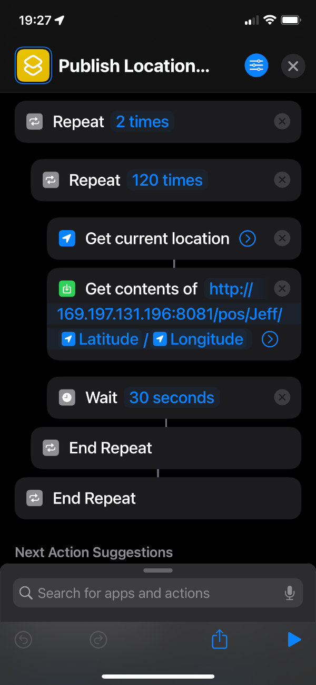

Below is a map and buttons to add a new tracked entity to the map. TODO actual documentation here, if necessary.
Create the following automator/shortcut/whatever on your ios/android device. The API url is /{tracker name}/{decimal latitude}/{decimal longitude} which will add the position to {tracker name}'s line.'
